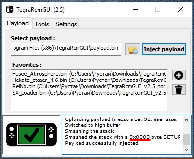

Помічник у виборі методу прошивки Nintendo Switch
Дисклеймер
Автори цього сайту не несуть відповідальності за інформацію на цій сторінці. Всі діапазони серійників взяті з відкритих джерел і скориговані особистим досвідом. Жодні претензії з приводу того, що на сайті був показаний зелений серійник, а приставка в результаті не прошивається, або навпаки, не приймаються!
Для приставки першої ревізії, єдиний вірний спосіб дізнатися прошивається вона чи ні - це перевірити, прокинувши пейлоад. Перевірка серійного номера не дає 100% результату. Наприклад, приставка з серійником XAW10065928690 буде позначена як прошивна, але за фактом такою не є. Дуже часто відновлені консолі мають прошивний серійник, але на ділі вразливість в них закрита. Майте це на увазі.
При перевірці через tegrarcmGUI у непрошивної консолі екран залишиться чорним, хоча у вікні tegrarcmGUI і буде показано, що пейлоад прокинуто успішно. У лозі програми буде вказано значення 0x0000. Це означає, що вашу приставку не можна прошити за допомогою Fusée Gelée
Якщо це ваш випадок, то для вашої приставки підійде чіп SX Core.
Детальніше про чіпи в керівництві.
Fusée Gelée
Цим типом злому можна зламати тільки приставки, що випускалися до літа 2018-го року. Незважаючи на те, що після зазначеного періоду приставки виходили точно на такій же апаратній платформі, вразливість була закрита. Якщо ви не знаєте чи вразлива ваша приставка до методу Fusée Gelée, нижче ви знайдете помічник для підбору типу вразливості за серійним номером, скористайтеся ним.
Caffeine
За допомогою цього типу злому, можна зламати будь-яку Nintendo Switch з версією системного ПЗ 4.0.0 - 4.1.0. Це програмна вразливість, прив'язана до певної версії системного ПЗ і працює тільки на ній.
Чіпування
За допомогою чіпування можна зламати взагалі будь-який Nintendo Switch. Чіпи на платформі Mariko (так звана друга ревізія, приставки серії Lite і OLED) можна зламати тільки за допомогою чіпування. Приставки першої ревізії із закритою вразливістю і з прошивкою вище, ніж 4.1.0 теж можна зламати тільки прочіпувавши.